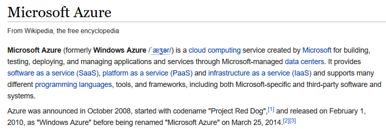
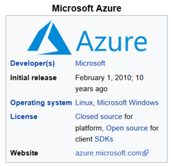
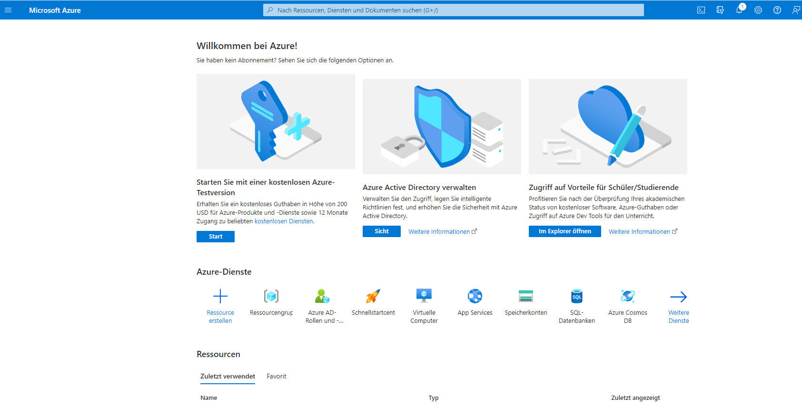
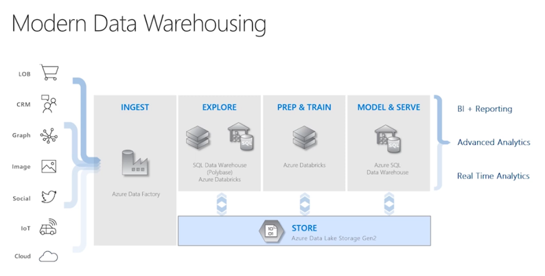
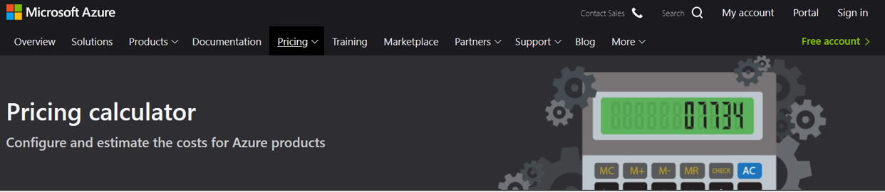
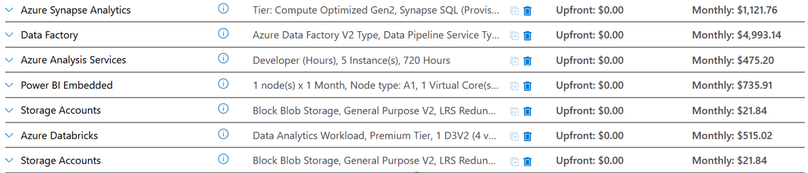
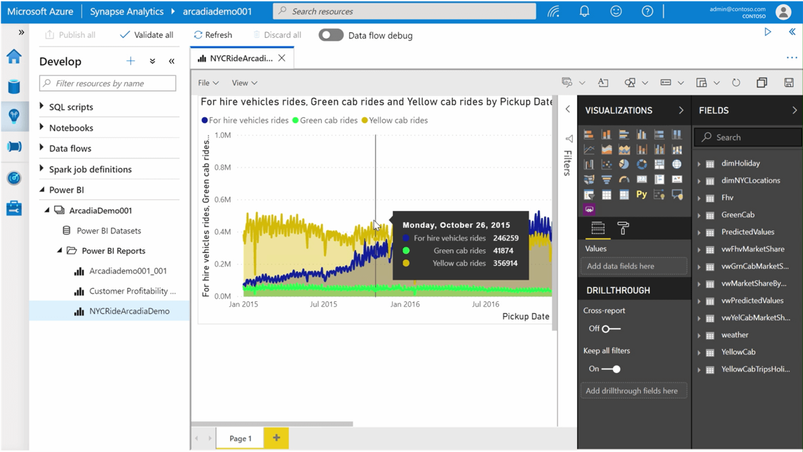
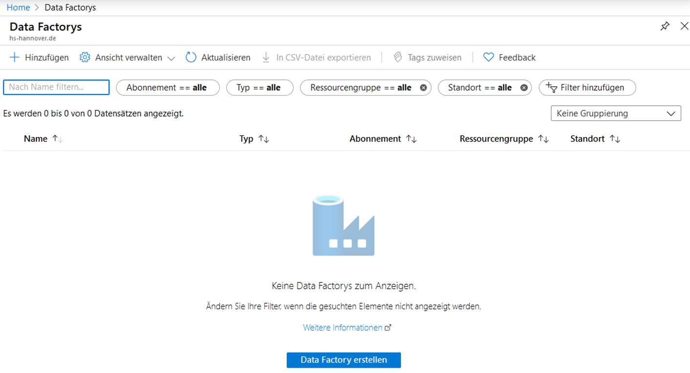
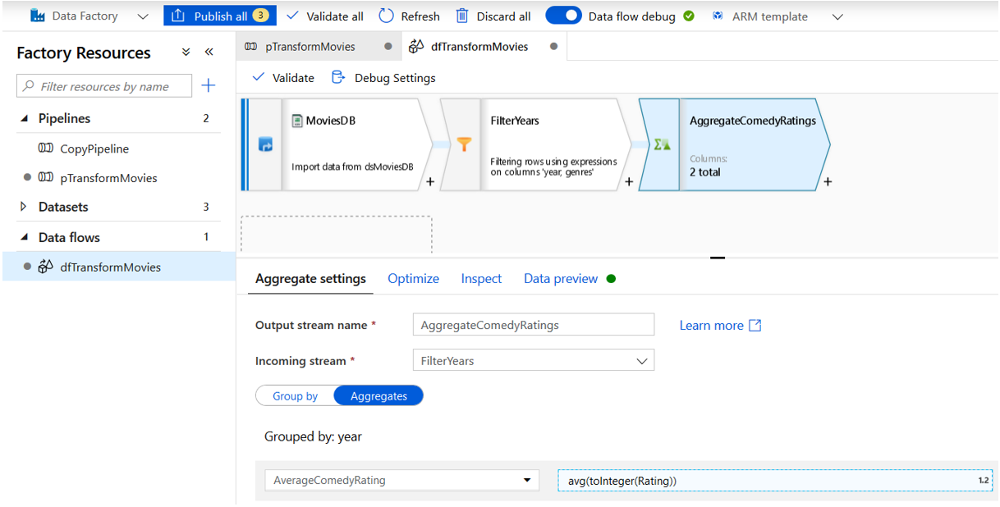

Business Intelligence
Cloud Plattformen (2)
Microsoft Azure


Microsoft Azure
portal.azure.com

Modern Data Warehousing

Modern Data Warehousing

Übersicht Azure Services
Azure ServicesModern Data Warehousing

Modern Data Warehousing


Modern Data Warehousing

Azure Datenbank
Azure stellt zwei SQL Datenbanken bereit:
- Azure SQL Database (Computer mit SQL Server)
- Azure Synapse Analytics (vormals SQL DW)
- Alternative in AWS Redshift und Google Big Query
Azure Synapse
Massively Parallel Processing (MPP) Architektur Control Node verteilt Abfrage an Compute Nodes, parallele Berechnung, Zusammenführung der Ergebnisse im Control Node
- Basiert auf der Microsoft SQL Server Engine
- Skalierbarkeit, Elastizität, Concurrency
- Für ein (großes) Cloud DWH optimiert
- Die verteilten Tabellen erscheinen logisch als eine Tabelle
- Trennung von Compute & Storage ermöglicht das (kostensparende) Stoppen der Datenbank (Compute)
- Integration mit Data Factory
- Hochverfügbar (99.9%)
Azure Synapse
Problem: Skalierbarkeit des verteilten Speichers („Storage“)
- Eine Gleichverteilung der Daten bei Erhöhung der Anzahl der Speicherknoten ist aufwendig
- Round Robin Distribution, Hash Distribution, Replicated Distribution
- Maximal 60 Speicherknoten
Azure Synapse
Ressourcen Management
- Compute Data Warehouse Units (cDWUs): Ein Mix aus CPU, Speicher und I/O
- cDWU 100 (Minimum)
- 1 Compute Node und 100 GB Speicher verteilt auf 60 Speicherknoten
- cDWU 30000 (Maximum): 60 Compute Nodes und 18 TB Speicher auf jedem der 60 Speicherknoten
Azure Synapse
Ressourcen-Klassen: Wieviel Rechenkapazität wird jeder Query zugeteilt?
- Eine größere Ressourcen-Klasse teilt jeder Abfrage mehr Ressourcen zu, begrenzt aber die Concurrency
- Eine kleinere Ressourcen-Klasse bewirkt das Gegenteil
- Es gibt statische und dynamische Ressourcen-Klassen. Sie definieren das Verhalten beim Hochskalieren des Clusters
- Eine statischen Ressourcen-Klasse ordnet der Abfrage immer eine definierte Menge an Ressourcen zu. Das erhöht dann die mögliche Concurrency für mehrere Abfragen. Sie eignet sich daher für definierte und vorhersagbare Abfragen
Azure SQL Database
Symmetric Multi Processing (SMP) Architektur Viele CPUs, aber nur ein Speicher => Engpass
- PaaS Version der On-Premise Microsoft SQL Server Datenbank
- Für Lese- und Schreibzugriffe optimiertes OLTP System
- Grundsätzlich auch für ein DWH geeignet
- Azure SQL Database Hyperscale (bis 100+ TB) für Szenarien > 4 TB
Deployment Optionen:
- Managed Instance (ähnlich On-Premise Microsoft SQL Server)
- Elastic Pool (für Compute Resources)
- Integration mit Data Factory
Azure SQL Database
Ressourcen Management
- Database Transaction Units (DTUs): Speicher, Hauptspeicher und CPU
- V-Core erlauben getrennte Skalierung von Storage & Compute
- Provisioned & Serverless Deployment
V-Core Tiers:
- General Purpose
- Hyperscale
- Business Critical
Azure SQL Database
Eine Cloud-basierter OLTP Server (kein OLAP Server) Aber: Es gibt keinen Grund, weshalb ein OLTP Server nicht auch analytische Abfragen bedienen kann (bis zu einer Lastgrenze) Für bestimme (kleinere) DWH Szenarien mag es sogar besser sein, eine Azure SQL Database zu verwenden
- Bei einem hohen Maß an Parallelität durch viele Nutzer, Berichte und ETL Prozesse (Azure Synapse Analytics ist auf maximal 128 gleichzeitige Abfragen begrenzt)
- Vereinfachte Verarbeitung (und Optimierung) in der SMP Architektur
- Micro-Batches in Event-Driven oder Streaming Architekturen (IoT, Industrie 4.0, Sensoren)(im Gegensatz zu sehr großen Datenmengen in regelmäßigen Abständen)
- Weniger als ca. 1 bis 5 TB Daten
- Bis ca. 100 TB auch günstiger
Azure Synapse Studio

Azure Synapse Studio

Azure Data Factory
adf.azure.com
Annahme: For data warehousing we need a platform for aggregating and processing data from a wide variety of sources. Mögliche Lösung/Technologie: When operating on the Azure platform, the established convention is to use Azure Data Factory (ADF) V2. This is the primary integration and orchestration engine for any data movement in to or out of Azure
Alternative: AWS Glue
Azure Data Factory

Azure Data Factory Komponenten
Ein Data Flow setzt sich aus diesen Komponenten zusammen
- Activities
- Pipelines
- Linked Services
- Datasets
- Triggers
Azure Data Factory Activities
An activity is a collection of actions which to perform on your data, grouped together in a unit of orchestration and execution. Each activity can have zero or more input datasets and produce one or more output datasets.
For example, an activity could be copying data from one dataset to another.
Activities are highly specialized JSON objects and provide the ability to do just one Action. Some activities execute compute jobs, some perform data movement, some run nested activities, while others implement control logic and looping.
Azure Data Factory Activities
Internal copy activities
Probably one of the most used activities in Data Factory is the Copy Data activity. Configuration options:
- The number of integration units to use (the scale of the job)
- The degree of parallelism to utilize
Multiple inputs/outputs
Branching, joining, and lookups break up datasets into multiple processing flows and look up data from sources using a lookup key
Schema modifier
Derived columns, aggregations, windowing, and pivoting transform the schema of the file by computing new columns or performing aggregations and grouping
Azure Data Factory Activities
Row modifier
Select, filter, and sort data with the additional capability to apply updates, inserts, and deletes to individual rows in the dataset
Destination
Add an output destination to land the transformed dataset into one of the supported sinks
Iteration and conditional activities
Lookup, Wait, For Each Loop, If Conditions, Until Loop
Web activities
A way to call a REST API. These are not for heavy lifting of data. These are designed to be “chatty” rather than chunky and are great for facilitating lightweight messaging and alike.
Azure Data Factory Pipelines
A pipeline is a group of activities. Together, the activities in a pipeline perform a task. They can be roughly likened to the control flow concept in SQL Server Integration Services. For example, a pipeline could contain a set of activities that ingest and clean log data, and then kick off a HIVE query on an HDInsight cluster to analyze the log data. The beauty of this is that the pipeline allows you to manage the activities as a set instead of each one individually. For example, you can deploy and schedule the pipeline, instead of the activities independently. In addition, the pipeline also holds the definition of any parameters and variables that may be utilized throughout the pipeline as part of an activity.Azure Data Factory Linked Service
You can think of a linked service much like a connection string. A linked service simply defines the connection information in which to connect to external data sources. Think of it this way: the dataset represents the structure of the data, and the linked service defines the connection to the data source. From within the UI, you can create a linked service connection to over 80 different data stores.- Data Store Linked Services allow you to fetch data or deposit data
- Compute Linked Services allow you to execute jobs on Azure-based compute resources such as Azure Databricks, Azure Functions, and Azure Synapse Analytics, to name a few.
Azure Data Factory Dataset
A dataset is a named view of data that simply points or references the data you want to use in your activities as inputs and outputs. With a linked service, you have a connection, but you now need to add a layer on top of that to implement logic that allows you to access specific tables, files, directories, and others. You can configure the elements such as the file format, column delimiter, and row terminator to be used when reading the file and then specify different metadata to write the file using.Azure Data Factory Triggers
Triggers are the method by which pipelines are invoked and allow ADF to support a variety of types of automation.When developing a Data Factory pipeline, you can test the pipeline in debug mode which allows the pipeline to execute fully only on a debug cluster and does not require a publish action. You can monitor your pipeline from within the authoring UI and check the input and output of each activity as execution occurs. Additionally, any activities that are configured to run in parallel will be run sequentially so that you can easily step into any activity in the pipeline.
The automatic triggers cater for a wide variety of automation options and fall under three categories which are listed here:
- Schedule triggers
- Tumbling window triggers
- Event triggers
Azure Data Factory Integrated Runtimes
Underpinning all activity in Azure Data Factory is the integration runtime (IR). This is the scalable, cloud compute resource that actually does the heavy lifting when copying data from one place to another or routing jobs to the required external compute resources. In most cases, you can default to using the Azure Integration Runtime which leaves the provision of the compute resource up to Azure itself and requires no further thought on the part of the developerAzure Data Factory Beispiel Aggregation UI

Azure Analysis Services
Warum Analysis Services , wenn das Stern Schema doch für analytische Abfragen erstellt wurde? Storage Layer vs. Semantic LayerSemantic data modeling is a phase where you want to create a semantic data model so that analysts can have seamless access to data. A semantic data model is a tabular format that is structured and can easily be visualized and understood by most users (Granularity, column names, hierarchies, security, KPIs).
Azure Analysis Services (AAS) is a cloud hosted service and a fully managed platform as a service (PaaS) tool that enables data engineers to model database tables and serve these semantic data models to users
Azure Analysis Services is built on the proven analytical engine of SQL Server 2016 Analysis Services.
AAS offers the following features
- The user can combine data from different complex sources and create a tabular representation of data that is easily understood by most people.
- The platform provides on-demand performance that can match the scale of your data size and operations.
- Azure Analysis Services is easy to deploy, scale, and manage as it is a PAAS solution.
- AAS also provides an added layer of security that ensures only the right people get access to the right set of data (role-based access control) using Azure Active Directory.
Tabular vs. Multidimensional
The Tabular model (In-Memory Cube). Tabular models are in-memory databases in Analysis Services. Using state-of-the-art compression algorithms and multi-threaded query processing, the Xvelocity (former name: Vertipaq) engine delivers fast access to tabular model objects and data through reporting client applications such as Microsoft Excel and Microsoft PowerBI.The Multidimensional model (traditional OLAP Cube). This model is the OLAP cube that already exists for more than ten years. OLAP technology organizes summary data into multidimensional structures. Aggregations are stored in the multidimensional structure in cells at coordinates specified by the dimensions.
Tabular vs. Multidimensional
These two models have the same goal: to provide a semantic layer on top of your DWH with high performance capabilities that allows the end-users to dig into the data.The fact that these two models are part of Analysis Services could give the impression that both models are similar and that you can easily switch from one model to another. The reality is that they are two different products with two totally different design experiences and underlying data-architectures. They can co-exist on the same machine but they both have their own instances.
Tabular Model:
More performant than OLAP in majority of the case.(Exception: Report on aggregated data with predefined aggregations) Easier to develop than Multidimensional model. Technology for the future. AAS only supports tabular projects.
Literatur
- Altaiar, H. et al. (2019). Cloud analytics with Microsoft Azure. Packt Publishing
- How, M. (2020). The Modern Data Warehouse in Azure: Building with Speed and Agility on Microsoft's Cloud Platform. Apress
- Coté, C., Gutzait, M. K., & Ciaburro, G. (2018). Hands-On Data Warehousing with Azure Data Factory: ETL techniques to load and transform data from various sources, both on-premises and on cloud. Packt Publishing Ltd.
- Klein, S. (2017). IoT Solutions in Microsoft's Azure IoT Suite. Berkeley, CA: Apress